Combat sound and ambience candidates
Audio is the lowest polish category (3 of 5). The combat sounds you hear most are still the placeholders tools/gen_audio.py wrote, and the ambience beds have been off since 9 Oct (#483). For each, the sound that ships today and an A and a B. Nothing here is wired into the game; a pick moves into gen_audio.py unchanged.
One-shots are normalised to the shipped placeholder's own loudness (the loudest 400 ms, K-weighted), so you compare character, not volume, and the game's gains stay right for a pick. In the game each plays with a little random pitch per shot and is placed by distance and bearing. Beds are 40 s seamless loops at the shipped beds' -26 LUFS (heard at about -34 LUFS behind everything); let them run round. Synthesised, CC0, byte-identical on every run of combat_candidates.py.
Combat one-shots
small_arms
placeholder from gen_audio.py · momentary max -23.1 LUFS · true peak -3.0 dBTP · 0.42 s
small_arms_a_556_crack — 5.56 crack
a sharp supersonic crack, a short bright blast, the report slapping back off the ground at 180 ms. The rifle that fires most in the game; it should be light.
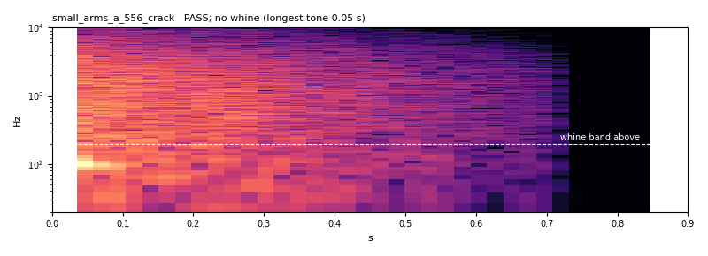
PASS · momentary max -23.3 LUFS · true peak -1.2 dBTP · 0.90 s, tail 0.70 s · no whine (longest tone 0.05 s) · the transient limiter takes 0.4 dB off its first milliseconds
small_arms_b_762_heavier — 7.62, heavier
less crack, more chest, a longer and darker tail with a second echo at 320 ms.
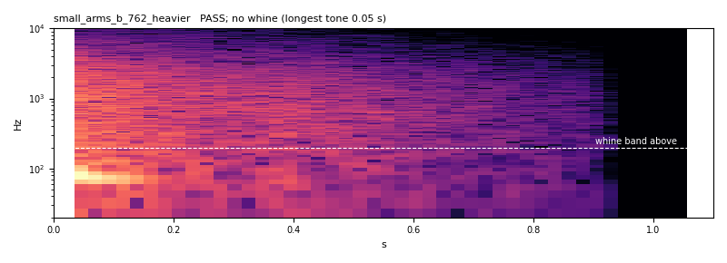
PASS · momentary max -23.1 LUFS · true peak -4.3 dBTP · 1.10 s, tail 0.91 s · no whine (longest tone 0.05 s)
hmg
placeholder from gen_audio.py · momentary max -21.6 LUFS · true peak -1.0 dBTP · 0.54 s
hmg_a_50_thump — .50 thump
a deep blast with a real low body, the report rolling for most of a second.
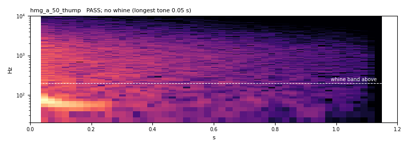
PASS · momentary max -21.6 LUFS · true peak -5.1 dBTP · 1.20 s, tail 1.10 s · no whine (longest tone 0.05 s)
hmg_b_valley_echo — Valley echo
the same gun heard further off, the crack dulled and two echoes at 220 and 480 ms.
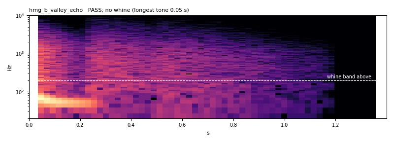
PASS · momentary max -21.6 LUFS · true peak -3.7 dBTP · 1.40 s, tail 1.17 s · no whine (longest tone 0.05 s)
autocannon
placeholder from gen_audio.py · momentary max -21.8 LUFS · true peak -1.9 dBTP · 0.64 s
autocannon_a_30mm_bark — 30 mm bark
a hard low punch, a short bright crack and the breech's steel clack 45 ms after.
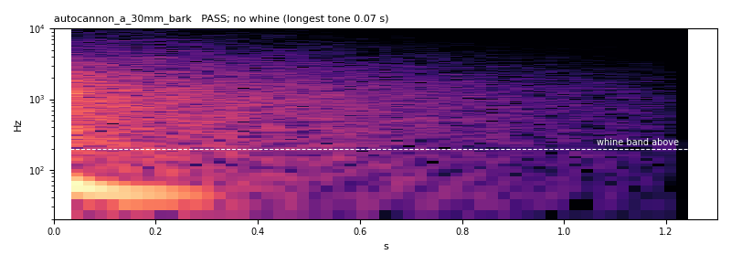
PASS · momentary max -21.8 LUFS · true peak -4.5 dBTP · 1.30 s, tail 1.20 s · no whine (longest tone 0.07 s)
autocannon_b_thud_links — Dull thud and link clatter
less crack, a rounder thump, the spent links rattling down.
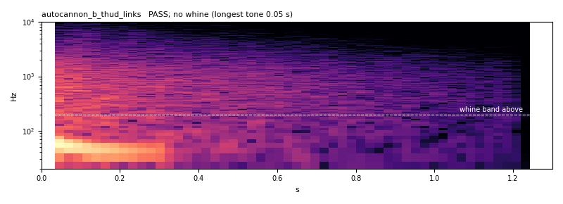
PASS · momentary max -21.8 LUFS · true peak -2.9 dBTP · 1.30 s, tail 1.20 s · no whine (longest tone 0.05 s)
tank_gun
placeholder from gen_audio.py · momentary max -17.2 LUFS · true peak -1.9 dBTP · 1.50 s
tank_gun_a_120mm_boom — 120 mm boom
a pressure wave you feel more than hear, the report rolling 2.5 s, a far echo at 0.6 s.
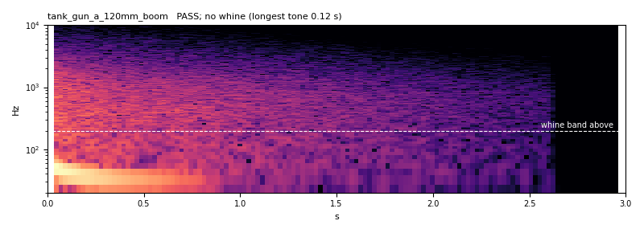
PASS · momentary max -17.2 LUFS · true peak -2.3 dBTP · 3.00 s, tail 2.59 s · no whine (longest tone 0.12 s)
tank_gun_b_sharper_crack — Sharper crack
more of the muzzle's crack and blast, a shorter tail: reads at a distance.
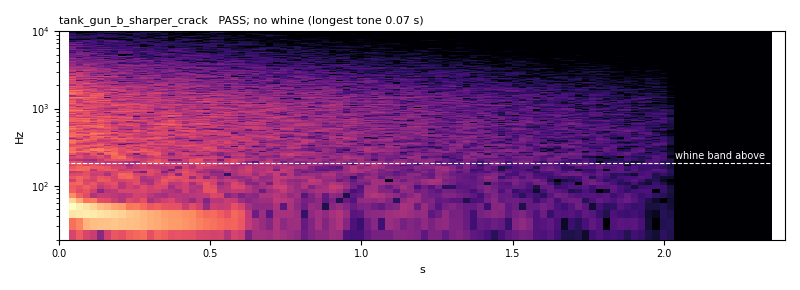
PASS · momentary max -17.3 LUFS · true peak -1.2 dBTP · 2.40 s, tail 2.00 s · no whine (longest tone 0.07 s) · the transient limiter takes 4.2 dB off its first milliseconds
mortar_thump
placeholder from gen_audio.py · momentary max -14.3 LUFS · true peak -1.7 dBTP · 0.92 s
mortar_thump_a_tube — Tube thoonk
the hollow cough of a round leaving the tube (a short tube resonance, noise-made), then the thump.
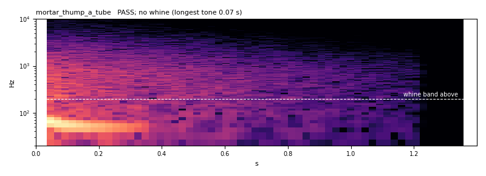
PASS · momentary max -14.4 LUFS · true peak -1.2 dBTP · 1.40 s, tail 1.18 s · no whine (longest tone 0.07 s) · the transient limiter takes 3.1 dB off its first milliseconds
mortar_thump_b_rush — Launch with a rush
a deeper thump and the rocket/round's hiss tailing off (the rocket battery shares this set).
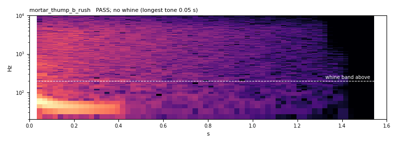
PASS · momentary max -14.4 LUFS · true peak -1.2 dBTP · 1.60 s, tail 1.39 s · no whine (longest tone 0.05 s) · the transient limiter takes 0.8 dB off its first milliseconds
impact_pen
placeholder from gen_audio.py · momentary max -18.3 LUFS · true peak -2.6 dBTP · 0.75 s
impact_pen_a_clang — Hard clang
steel struck through -- a crack and a short, inharmonic clang that dies before it can ring.
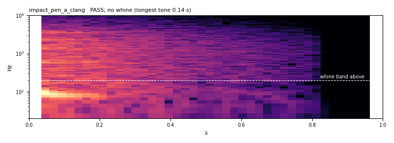
PASS · momentary max -18.4 LUFS · true peak -1.2 dBTP · 1.00 s, tail 0.80 s · no whine (longest tone 0.14 s) · the transient limiter takes 4.5 dB off its first milliseconds
impact_pen_b_spall — Punch and spall
a dull punch through armour and the spall rattling inside, no bell at all.
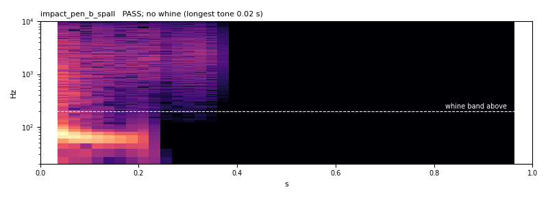
PASS · momentary max -18.5 LUFS · true peak -1.2 dBTP · 1.00 s, tail 0.34 s · no whine (longest tone 0.02 s) · the transient limiter takes 1.4 dB off its first milliseconds
destroyed
placeholder from gen_audio.py · momentary max -13.0 LUFS · true peak -1.1 dBTP · 2.50 s
destroyed_a_fireball — Fireball
a deep boom, a roaring blast and burning crackle that thins out over two seconds.
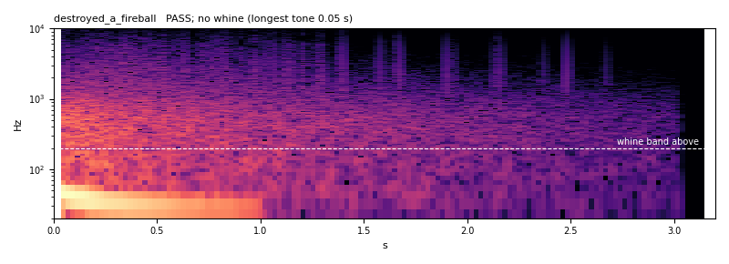
PASS · momentary max -13.1 LUFS · true peak -1.2 dBTP · 3.20 s, tail 3.01 s · no whine (longest tone 0.05 s) · the transient limiter takes 2.9 dB off its first milliseconds
destroyed_b_cook_off — Cook-off
the kill, then two late secondary pops as the ammunition goes.
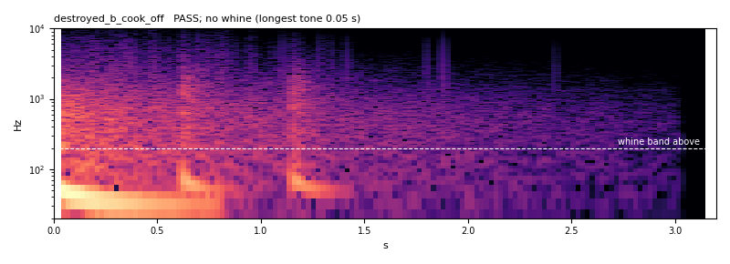
PASS · momentary max -13.2 LUFS · true peak -1.2 dBTP · 3.20 s, tail 2.99 s · no whine (longest tone 0.05 s) · the transient limiter takes 3.1 dB off its first milliseconds
near_miss
placeholder from gen_audio.py · momentary max -24.4 LUFS · true peak -5.0 dBTP · 0.55 s
near_miss_a_snap — Supersonic snap
the round's own crack passing a metre off, then a short whip of air.
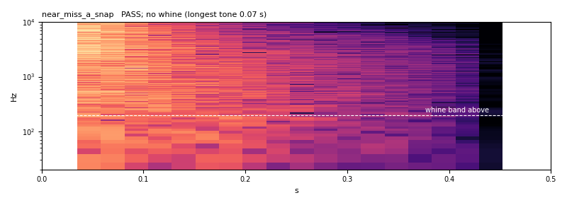
PASS · momentary max -24.4 LUFS · true peak -2.4 dBTP · 0.50 s, tail 0.40 s · no whine (longest tone 0.07 s) · the transient limiter takes 0.7 dB off its first milliseconds
near_miss_b_whizz — Whizz-by
a subsonic fragment's falling whizz (band-limited noise sweeping down), no crack.
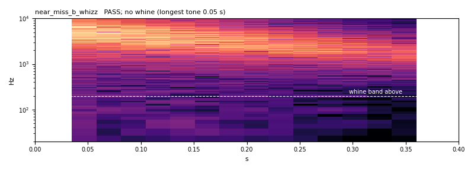
PASS · momentary max -24.4 LUFS · true peak -10.2 dBTP · 0.40 s, tail 0.35 s · no whine (longest tone 0.05 s)
Ambience beds
open
amb_open_a_still — Open ground, still
a soft wind that rises and falls twice a minute and dry grass hiss, nothing else.
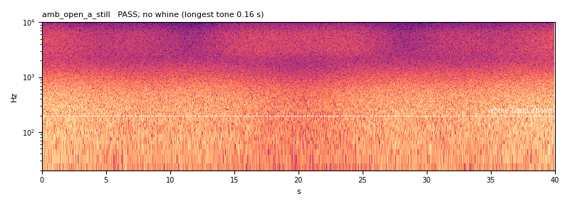
PASS · -26.0 LUFS · true peak -9.9 dBTP · seam 0.984 · no whine (longest tone 0.16 s) · low note 47 Hz held 0.9 s, +8 dB
amb_open_b_breeze — Open ground, breezier
more wind with gusts, a bird's two short calls now and then (each under a second).
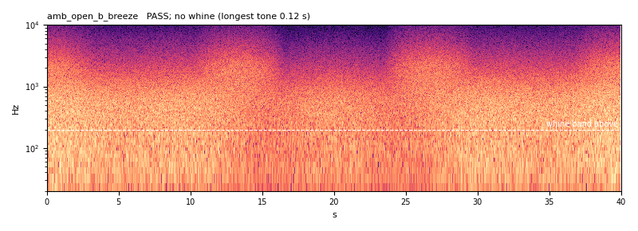
PASS · -26.0 LUFS · true peak -8.8 dBTP · seam 0.997 · no whine (longest tone 0.12 s) · low note 49 Hz held 0.8 s, +9 dB
town
amb_town_a_empty — Town, empty streets
wind between buildings, a far-off engine idling and a metal door now and then.
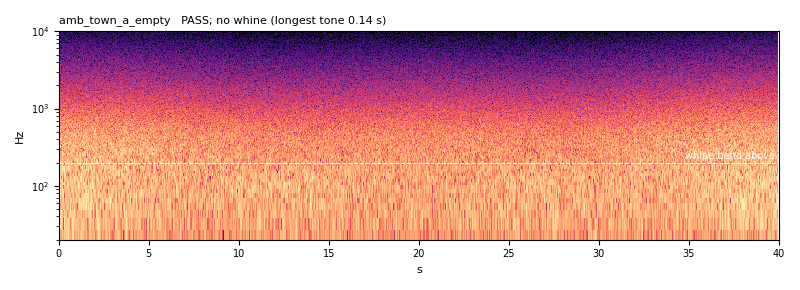
PASS · -26.0 LUFS · true peak -8.9 dBTP · seam 0.999 · no whine (longest tone 0.14 s) · low note 52 Hz held 0.9 s, +9 dB
amb_town_b_inhabited — Town, inhabited
the A bed plus distant voices' murmur (formant-band noise, no pitch) and a dog barking twice.
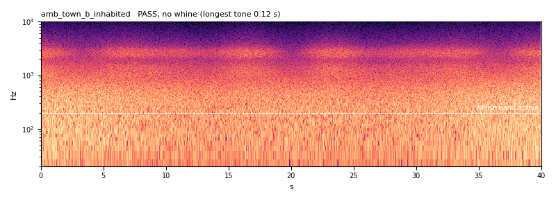
PASS · -26.0 LUFS · true peak -10.0 dBTP · seam 0.998 · no whine (longest tone 0.12 s) · low note 40 Hz held 0.6 s, +10 dB
ridge
amb_ridge_a_exposed — Ridge
high, exposed wind -- darker and stronger, long gusts that roar across the rock.
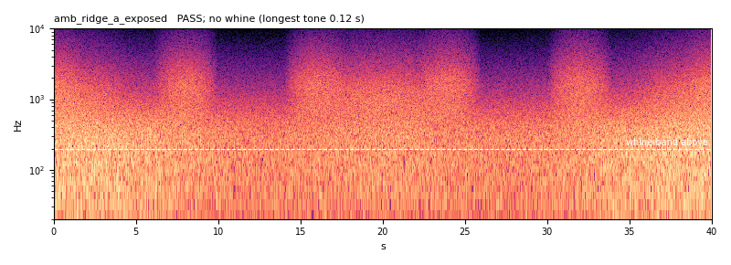
PASS · -26.0 LUFS · true peak -7.1 dBTP · seam 0.990 · no whine (longest tone 0.12 s) · low note 44 Hz held 0.6 s, +8 dB
amb_ridge_b_gentler — Ridge, gentler
the same exposure with less roar and loose stones trickling now and then.
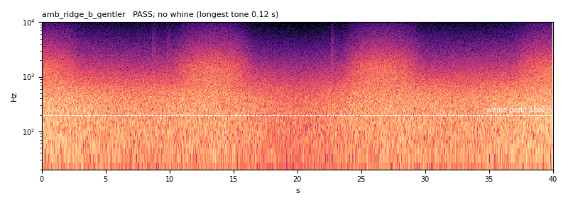
PASS · -26.0 LUFS · true peak -8.4 dBTP · seam 0.998 · no whine (longest tone 0.12 s) · low note 47 Hz held 1.0 s, +9 dB
How it was checked
The meters and the whine detector are the engines' own (../engines/engine_candidates.py, imported). A one-shot is read as a one-shot (not wrapped); a bed is read wrapped, as it loops. Whine: a spectral peak 10 dB or more over the ±161 Hz around it, 200 Hz to 8 kHz, held 1 s or longer. Each check was first shown an input built to fail it:
- K-weighting = BS.1770-4 table at 48 kHz: max coefficient error 8.9e-16 ✓
- 997 Hz sine at -20 dBFS meters -23.01 LUFS: -23.01 LUFS ✓
- same, then 5 s at -40 dBFS: gated out, -23.14: -23.14 LUFS ✓
- fs/4 sine, 45 deg off crest: 0.0 dBTP: +0.02 dBTP (sample peak -3.01) ✓
- pure 440 Hz tone, 3 s: WHINE: 440 Hz for 2.93 s, 71 dB over its neighbours ✓
- 440 Hz 3 s under pink noise: WHINE: 440 Hz for 2.93 s, 13 dB ✓
- 440 Hz for 0.4 s in pink noise: clean: longest 0.46 s ✓
- white noise: clean: longest 0.09 s ✓
- pink noise: clean: longest 0.09 s ✓
- loop that starts dark and ends bright: seam FAILS: corr -0.91, step 0.27 dB ✓
- loop whose ends do not meet: seam FAILS: click 4.2x ✓
- periodic noise loop: seam passes: corr 0.996, click 0.29x, step 0.25 dB ✓
- 997 Hz at -20 dBFS held 1 s: momentary max -23.0: -23.01 LUFS ✓
- same sine for 0.2 s reads lower (window half filled): -26.02 LUFS ✓
- exponential decay, 60 dB in 1.38 s: tail reads it: 1.38 s ✓
- clang ringing 1.2 kHz for 1.5 s: WHINE: 1200 Hz held 1.49 s ✓
- the same partial cut to 0.5 s: clean: longest 0.49 s ✓